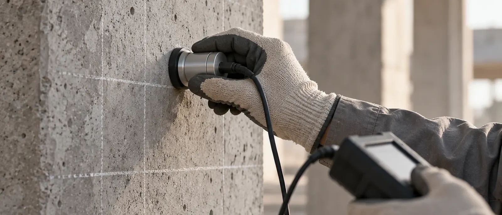

Common Methods for Concrete NDT
Rebound hammer, ultrasonic pulse velocity, cover meters and cores: what each method tells you about existing concrete, and why they work best together.
By the PETALS engineering team
Technically reviewed by [Reviewer name]

Why test without breaking
When a structure shows distress, changes use or needs to carry more load, the first question is what the concrete is actually like. Non-destructive testing helps answer that at selected, accessible locations, quickly and without weakening the structure. Results describe the areas tested, so test locations are chosen to represent the members that matter.
No single method gives the full picture. Each one measures something different, and the results are more reliable when they are combined and correlated with a limited number of cores, which are a separate, destructive test.
Rebound hammer
A spring-loaded mass strikes the concrete surface and the rebound is recorded. Harder concrete gives a higher rebound number. It is fast and cheap, which makes it ideal for comparing members and finding weak zones.
It only reads the surface, roughly the outer 30 mm. Carbonation, moisture and surface finish all affect it, so rebound values should not be converted to strength without calibration against cores.
Ultrasonic pulse velocity
An ultrasonic pulse is sent through the concrete between two transducers and its travel time is measured. Dense, uniform concrete carries the pulse faster; cracks, voids and honeycombing slow it down. UPV looks through the member, not just at its surface. Readings are also affected by moisture, reinforcement along the path and the test arrangement, so they are interpreted in context rather than against a single threshold.
Good (indicative). Suggests generally sound concrete. A local drop compared with neighbouring readings is more telling than any single value.
Cover, corrosion and carbonation
Many concrete problems are really steel problems. Three tests work together:
| Test | What it measures | Why it matters |
|---|---|---|
| Cover meter | Bar position and depth of cover | Thin cover lets moisture and carbon dioxide reach the steel |
| Carbonation depth | How far carbonation has advanced from the surface | Once it reaches the steel, the bar loses its protection |
| Half-cell potential | Electrical potential of the reinforcement | Indicates the likelihood of active corrosion |
Read together, they tell a story: if carbonation depth is greater than cover and half-cell readings indicate corrosion, the steel is at risk even where the concrete looks sound.
NDT tells you where to look. Cores tell you what you found.
Cores: the calibration
Core testing is not NDT: it is a destructive test that removes concrete from the member. A small number of cores, taken at locations chosen from the NDT survey, including the best and worst zones, and tested for compressive strength, turns NDT readings into values that can be used in assessment. The rebound and UPV results are then correlated with the core strengths for that structure.
Planning a test programme
A typical programme runs in order: a visual condition survey and crack mapping to define the problem; rebound and UPV on a grid to map variation; cover, carbonation and half-cell where durability is in question; then cores to calibrate. The report should bring these together into a clear view of condition and next steps.
Key takeaways
- Rebound hammer reads the surface; UPV reads through the member.
- Cover, carbonation and half-cell together assess risk to the reinforcement.
- Calibrate NDT against a few well-placed cores.
- NDT results describe the locations tested; look for patterns, not single values.